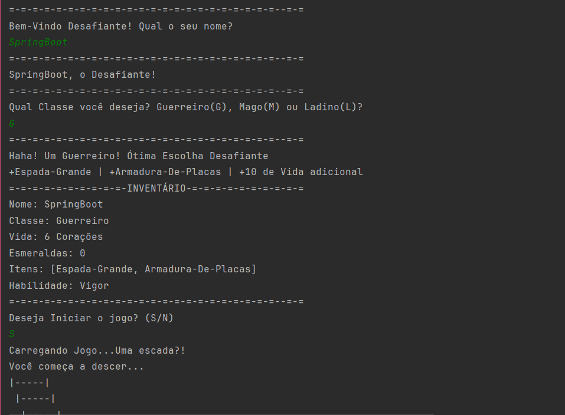

Sobre o Projeto do Primeiro Semestre
Dimensional Doors:
Jogo de RPG, com escolhas feitas pelo jogador e cada escolha retornava uma nova Porta Dimensional. O jogador poderia encontrar baús do tesouro, esmeraldas, monstros e batalhar caso necessário.
